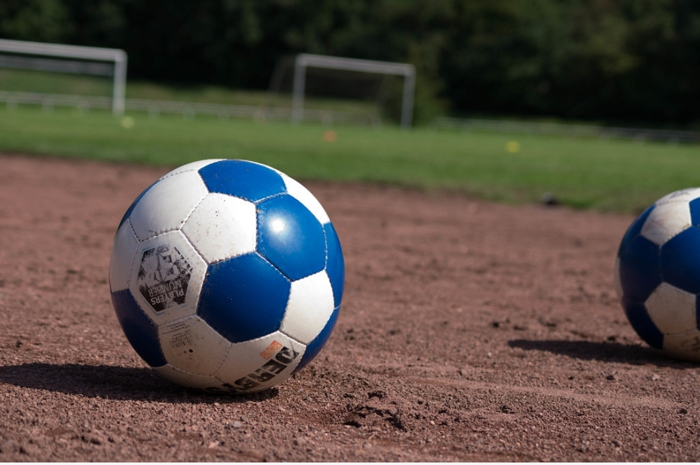
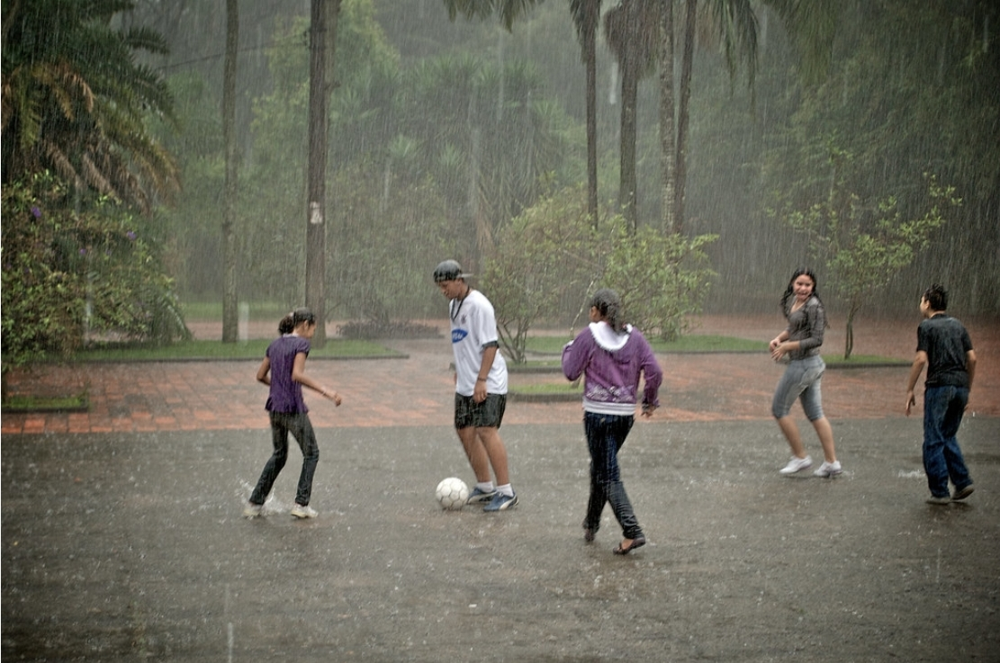
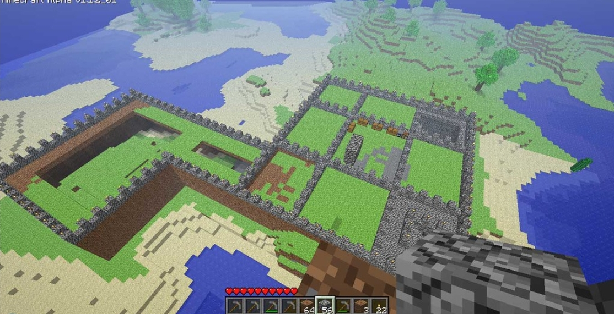
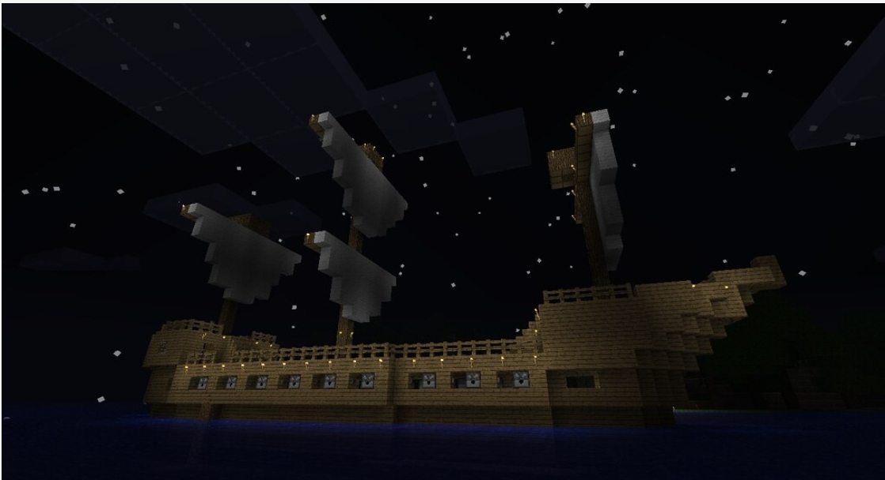
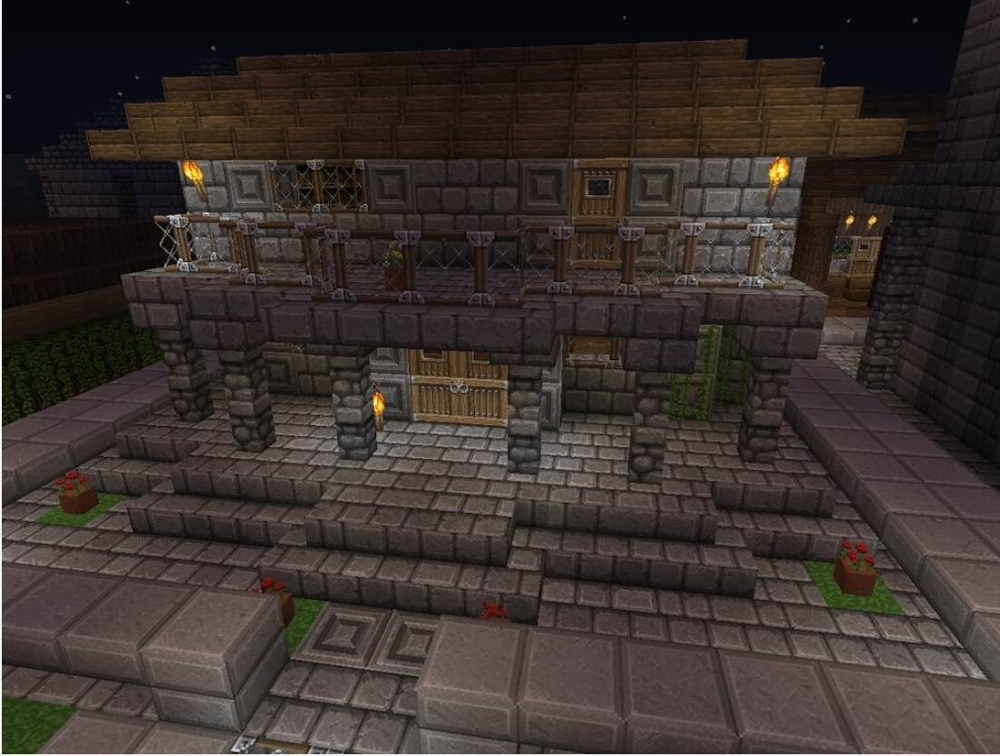

SOCCER!! |
MINECRAFT!! |
Soccer is a sport of 22 players played on a field. This sport has goals and 11 players on each team. The goal is to work together and score a goal on the other teams post. I really love this sport because I can run fast and enjoy playing with my teammates. "Soccer Ball Blue" by HolgerLi is marked under CC PDM 1.0. To view the terms, visit https://creativecommons.org/publicdomain/mark/1.0/  "Teenagers playing soccer in the rain" by marlon.net is licensed under CC BY 2.0 |
Minecraft is a game where you can let your creativity flow. It is a game I which player create and destroy blocks in a 3D world. There are 2 game modes in minecraft creative and survival. In creative you can build or make anything you want from your wildest dreams. In this game mode they give you unlimited access to all materials so that you can create what you want. In survival, players have to find food and materials to live. They can be attacked by mobs but players must find a way to craft and survive. Crafting is when you combine e materials to form an advanced item. The ultimate goal of this game is to build a portal and fight the final boss, the Ender Dragon. After beating the Ender Dragon you can get the Elytra and do much more to fully complete the game. "Minecraft Castle" by Mike_Cooke is licensed with CC BY-NC 2.0. To view a copy of this license, visit https://creativecommons.org/licenses/by-nc/2.0/  "Minecraft Pirate Ship" by JimmyJett is licensed with CC BY-NC 2.0. To view a copy of this license, visit https://creativecommons.org/licenses/by-nc/2.0/ |
My Experience!! |
I love soccer because I am good at running and love the concept of kicking, since I'm good with my feet. I would recommend this sport to anyone who is willing to practice and try hard. Soccer is good because it is good for your physical health and is very competitive. My best goal was from half-field when I curved the ball into the goal, winning the match. In my opinion soccer is a really good sport. |
I love Minecraft because it is a game in which we can do anything from our wildest dreams. Some people have even made moving houses in this game. I would recommend this game to anyone with a big imagination and anyone who like to put in long hours to accomplish something. Below is a cool Minecraft house that is like one that I had made. ""My New Minecraft House" by Uriel 1998 is licensed with CC BY 2.0. To view a copy of this license, visit https://creativecommons.org/licenses/by/2.0/ |
By: Anonymous |
|